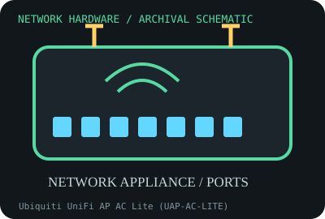

[ MODEL-SPECIFIC NETWORK HARDWARE RECORD ]
Ubiquiti UniFi AP AC Lite (UAP-AC-LITE)
Ceiling/wall Wi-Fi 5 access point with one Gigabit Ethernet uplink and PoE. This record identifies the stated model/revision; visually similar products may use different silicon or firmware.

IDENTIFICATION: Verify the full label, board revision, vendor/device IDs and regulatory markings before selecting firmware or drivers. Nominal PHY/link rates below are not measured application throughput.
Specifications and compatibility
| Subcategory | Network appliances: routers, access points & switches |
|---|---|
| Exact model | Ubiquiti UniFi AP AC Lite (UAP-AC-LITE) |
| Interface and connector | One 10/100/1000BASE-T RJ-45 Ethernet port with PoE input; ceiling/wall mount and internal dual-band antenna array. |
| Controller / PHY / radio | Simultaneous dual-band 2.4 GHz 2x2 802.11n and 5 GHz 2x2 802.11ac radio; advertised radio maxima are 300 and 867 Mb/s, respectively. |
| Nominal throughput (not a test) | 867 + 300 Mb/s marketed aggregate class is not a single client link; wired uplink is 1 Gb/s nominal and constrains combined traffic. No measured throughput claimed. |
| Measured throughput | No RF or wired benchmark included. Real capacity depends on AP firmware, client capabilities, channel plan, placement, PoE, neighboring traffic and uplink. |
| Driver / OS / firmware | Configured and updated through UniFi Network application/controller using Ubiquiti device firmware; compatibility with current controller releases and end-of-support status should be checked before adoption. Not a host OS NIC driver. |
| Compatibility | Needs standards-compatible PoE source specified for the exact revision (many include a passive/24V injector; check label/manual), Gigabit Ethernet uplink, controller adoption and region-compliant channels. |
| Variant warning | UAP-AC-LITE, UAP-AC-LR and later U6 Lite are different devices. Hardware revision, included injector voltage, mounting plate, radio behavior and firmware/controller support vary; never assume PoE pinout from connector shape. |
Variant and operating notes
UAP-AC-LITE, UAP-AC-LR and later U6 Lite are different devices. Hardware revision, included injector voltage, mounting plate, radio behavior and firmware/controller support vary; never assume PoE pinout from connector shape.
Configured and updated through UniFi Network application/controller using Ubiquiti device firmware; compatibility with current controller releases and end-of-support status should be checked before adoption. Not a host OS NIC driver.
Throughput policy: vendor/standard rates are labeled nominal. This archive includes no measured benchmark for this specimen; do not interpret a link rate or aggregate port capacity as sustained payload performance.
Archival, ESD and preservation notes
Archive MAC, serial, board/revision, firmware, original injector model, mount and reset condition. Power down before disconnecting; use ESD-safe packaging and do not store with a powered PoE injector connected.
Preserve the exact model/revision, serial/date code, firmware and driver versions, accessories, condition, source provenance, and source-document revision. Never retain access credentials or undocumented secrets in the public catalog.
Manufacturer and standards sources
- Ubiquiti UniFi AC access point data sheet (includes UAP-AC-LITE)Manufacturer data sheet; compare model and hardware revision with the device label.
- Ubiquiti UniFi support and documentationManufacturer reference for controller adoption and firmware; support lifecycle varies by model.
- IEEE 802.11 working group standardsWireless LAN standards reference; a standard is not a throughput guarantee.
Source coverage can be family-level; manufacturer documentation for the exact part number and hardware revision takes precedence. Standards describe protocol behavior, not a promise of real-world performance.